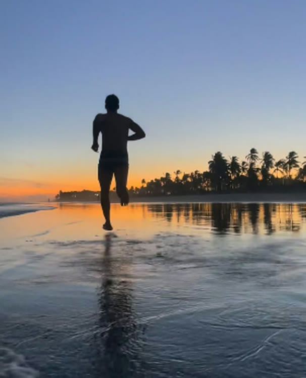

Treino quetira você domodo automático
Personal trainer em Salvador, BA: individual, funcional ao ar livre e um grupo de trail run que começou entre amigos e virou rotina de quem decidiu levar o corpo a sério, sem se levar tão a sério assim.

Quem é
Rodolfo Bastos
Personal trainer apaixonado por transformar vidas pelo movimento, dentro e fora da academia. Ensina que resultado não vem de treino perfeito, vem de treino que acontece: hoje, com o que você tem, no tempo que você tem.
"Você não precisa de horas. Precisa começar." Rodolfo Bastos
É a frase que resume o método: sem academia, sem desculpa, sem hora perdida. Quem treina com Rodolfo, pessoalmente na quadra e nas dunas ou em casa pelo Treino Fast RB, encontra o mesmo recado: constância importa mais que intensidade, e todo nível (iniciante, intermediário ou avançado) tem seu ponto de partida.
Conheça a história completa do Rodolfo →Como treinar com o Rodolfo
Três formatos, um mesmo compromisso: presença de verdade, treino que respeita seu corpo e evolução que se sustenta.
Personal Trainer
Treino sob medida, acompanhamento próximo e ajustes constantes: presencial, no seu ritmo e com foco no seu objetivo real.
Funcional na Quadra
Treino funcional ao ar livre, em grupo, na quadra da Praia do Flamengo. Energia coletiva, exercícios que desafiam o corpo inteiro e aquela comunidade que puxa todo mundo pra frente.
Grupo de Trail Run
Corrida nas dunas de Stella Maris com o grupo que começou pequeno e hoje reúne gente de todos os ritmos, do primeiro treino de trilha à próxima prova (como a Cascutra).
Não dá pra treinar
com o Rodolfo ao vivo?
Treine com ele em casa.
O Treino Fast RB é o método que ele criou pra quem não tem 2 horas livres nem academia por perto: 20 minutos por dia, em casa, com progressão real do iniciante ao avançado. Já tem gente treinando direto de fora do Brasil.
Não é só treino. É gente que se sustenta junto.
Ser professor vai muito além de montar treinos. É incentivar, orientar, corrigir, motivar e, muitas vezes, acreditar no aluno até quando ele mesmo duvida da própria capacidade. E você faz isso com muita dedicação e competência.
Excelente profissional! Um personal dedicado, atencioso e muito competente. Sempre preocupado em orientar corretamente, respeitando os limites e buscando o melhor resultado. Além de ser um profissional maravilhoso, transmite confiança e motivação em cada treino. Super recomendo!
Excelente profissional, com treinos personalizados, focado no bem estar geral dos alunos e não apenas no físico. Treinos ao ar livre em clima familiar e muito agradável! Recomendo!
Treinamento muito bom, até em grupo é possível ter intensidades individuais. Sempre que puder eu vou voltar, tanto ao treino de sábado quanto trilha de domingo.
Rodolfo é uma cara sensacional, sua presença, atenção e comprometimento é transformador. Tive a sorte de poder conviver e aprender todos os dias com essa pessoa tão especial.
Quer ver a rotina de perto? Quadra, dunas e bastidores do Treino Fast RB, tudo registrado todo dia no Instagram.
@rodolfobastos.rb · seguir →Por que treinar
com o Rodolfo
Constância antes de intensidade
O treino que você mantém vale mais que o treino perfeito que você abandona na segunda semana.
Todo nível tem ponto de partida
Iniciante, intermediário ou avançado: o plano se adapta a você, não o contrário.
Comunidade de verdade
Na quadra, nas dunas ou no grupo do Treino Fast RB, ninguém treina sozinho.
Educação sem modismo
Conversa direta sobre o que funciona de verdade, sem sensacionalismo e sem fórmula mágica.
Registros
um retrato do que é treinar com o Rodolfo
Não deu pra carregar o vídeo por aqui. Se você abriu este arquivo direto (duplo clique), sirva a pasta por um servidor local — veja o README — ou acesse a versão publicada do site.
Perguntas frequentes
Preciso ter experiência prévia pra começar?
Não. Tanto o funcional na quadra quanto o Treino Fast RB têm caminho pra quem está começando do zero: o plano se ajusta ao seu nível, não o contrário.
Onde ficam os treinos ao ar livre?
O funcional acontece na quadra da Praia do Flamengo. O grupo de trail run se encontra nas dunas de Stella Maris — ambos em Salvador, BA.
Não moro em Salvador, dá pra treinar com o Rodolfo?
Dá sim — pelo Treino Fast RB, o método em casa de 20 minutos por dia, disponível de qualquer lugar (tem gente treinando até de fora do Brasil).
Como marco uma avaliação inicial?
É só chamar no WhatsApp pelo botão do site ou mandar mensagem no Instagram @rodolfobastos.rb.
Bora começar?
Manda uma mensagem, conta seu objetivo e a gente monta o caminho: na quadra, nas dunas ou direto do seu quarto.